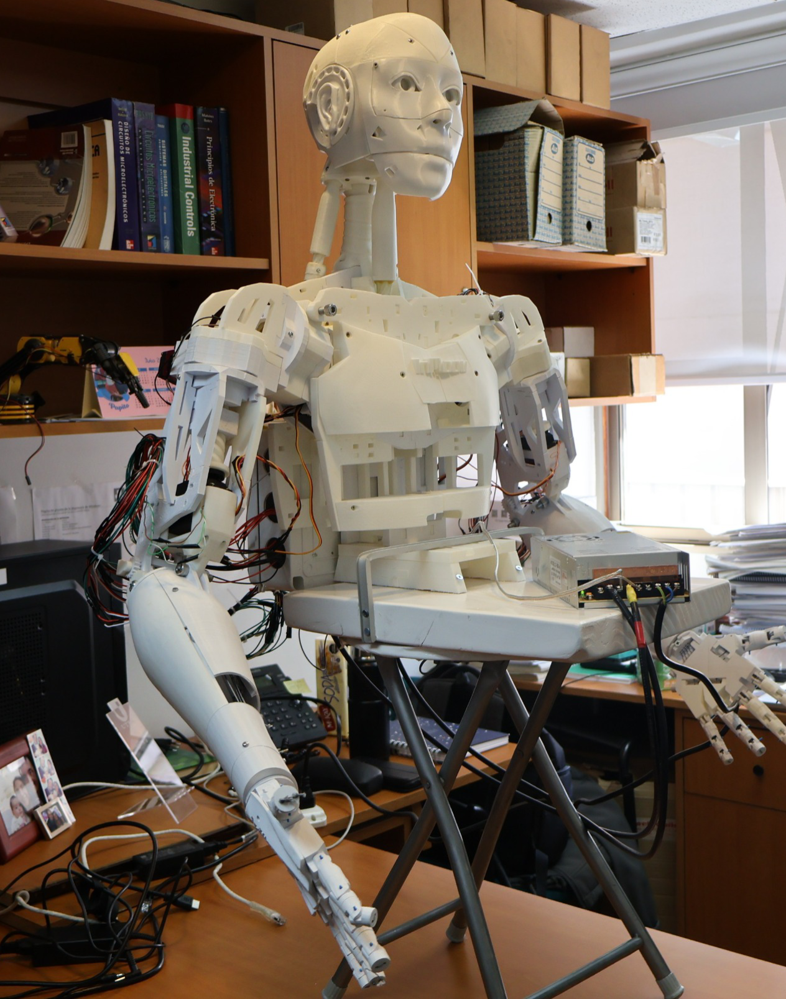
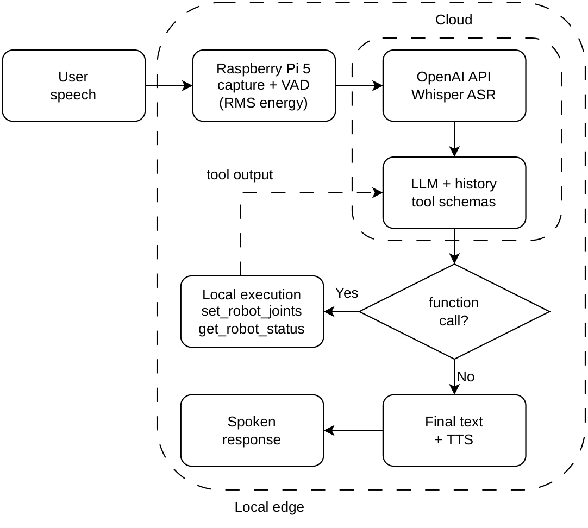
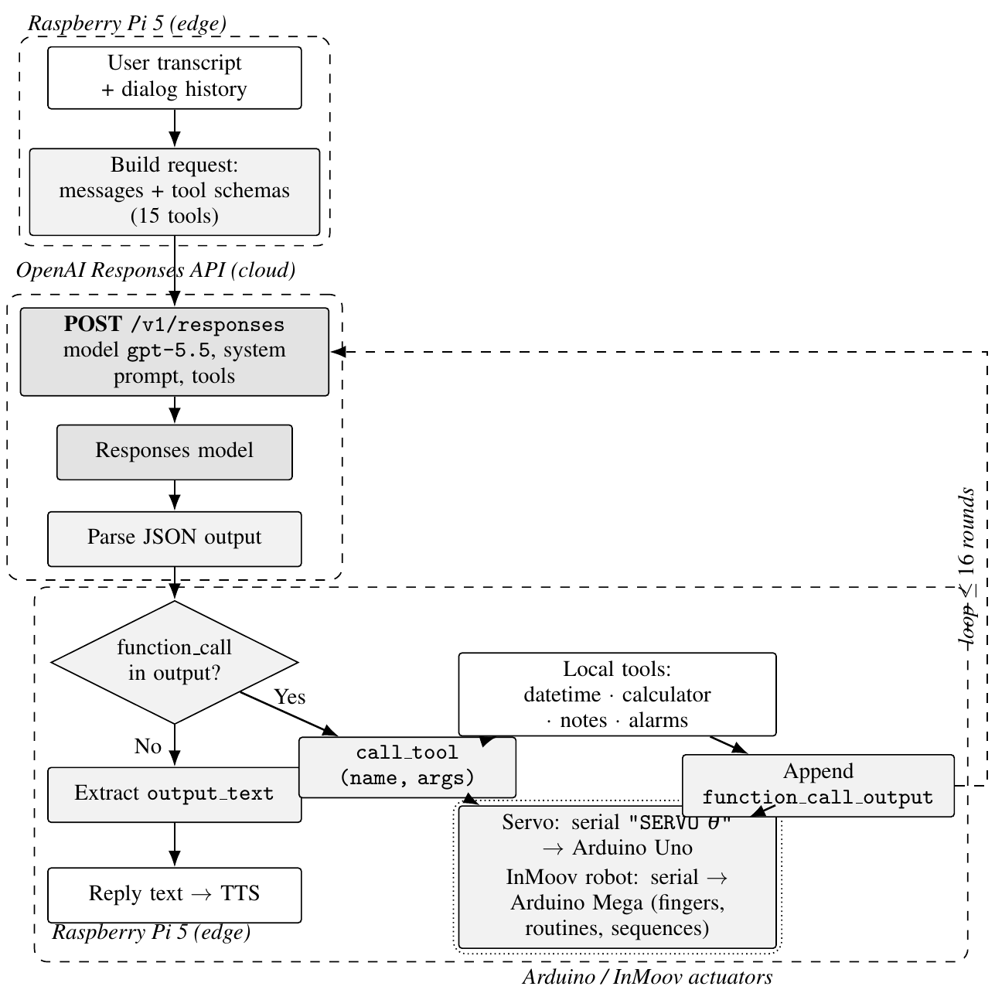
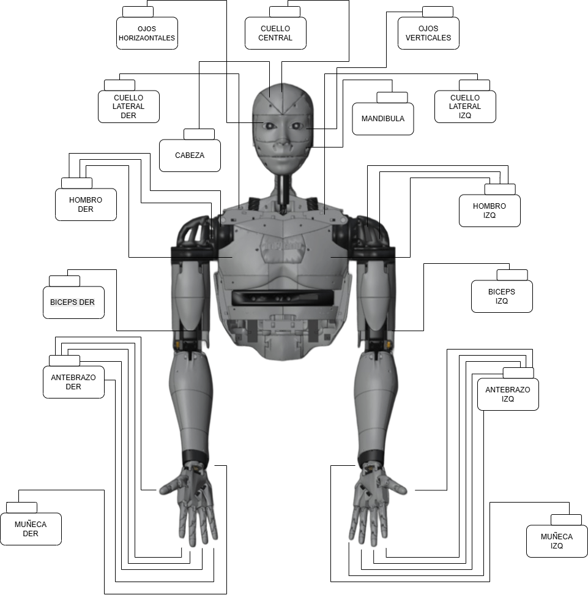
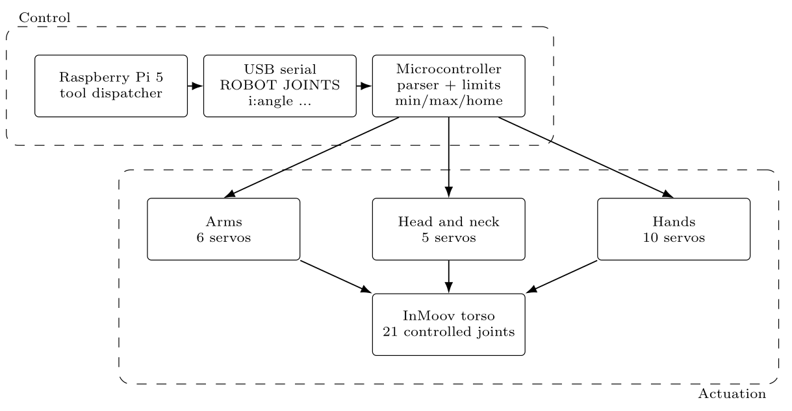

Detección de voz local, ASR en la nube y un LLM con function calling que compone comandos para 21 articulaciones, con verificación local de rango, sobre una Raspberry Pi 5 y un Arduino Mega. Local voice activity detection, cloud ASR, and an LLM with function calling that composes commands for 21 joints, with local range checking, on a Raspberry Pi 5 and an Arduino Mega.

Los robots humanoides open-source como InMoov ofrecen plataformas asequibles para la investigación en robótica y la docencia en ingeniería, pero su comportamiento suele limitarse a bibliotecas de movimientos predefinidos, escritos a mano. Este trabajo presenta una arquitectura de generación de acciones por voz para un torso humanoide InMoov recomisionado, en la que las órdenes habladas se traducen en comandos articulares mediante un modelo de lenguaje grande (LLM) con function calling. En lugar de funciones específicas de movimiento, el LLM recibe una interfaz general de pares articulación-ángulo que abarca las 21 articulaciones controladas. La arquitectura integra detección de actividad de voz (VAD) local, reconocimiento automático de habla (ASR) en la nube con Whisper y una capa de validación que rechaza ángulos fuera de rango antes de la transmisión serial. En doce interacciones a nivel de software, el sistema produjo secuencias distintas de comandos aceptados para cuatro instrucciones habladas; una prueba adicional con alimentación mostró una ejecución cualitativa en el torso. El LLM emitió 47 propuestas de comando articular, de las cuales 30 se rechazaron por exceder los límites articulares, y las doce interacciones se completaron tras reintentos. Cerca del 94 % del turno medido (media 26,6 s, rango 16,8–46,1 s) queda tras restar una duración estimada del comando local. Los resultados respaldan una prueba de concepto en este torso; no se evaluaron la reconocibilidad de los gestos ni la seguridad física. Open-source humanoid robots such as InMoov provide affordable platforms for robotics research and engineering education, yet their behavior is typically restricted to predefined, hand-scripted motion libraries. This paper presents a voice-driven action generation architecture for a recommissioned InMoov humanoid torso, in which spoken commands are translated into joint commands through a large language model (LLM) using function calling. Instead of motion-specific functions, the LLM is given a generalized joint-angle interface spanning the 21 controlled joints. The architecture integrates local voice activity detection (VAD), cloud-based automatic speech recognition (ASR) using Whisper, and a validation layer that rejects out-of-range joint angles before serial transmission. In twelve software-level interactions, the system produced distinct accepted command sequences for four spoken instructions; one additional powered trial showed qualitative execution on the torso. The LLM issued 47 joint-command proposals, of which 30 were rejected for exceeding joint limits, and all twelve interactions completed after retries. About 94% of the measured turn (mean 26.6 s, range 16.8–46.1 s) remains after subtracting an estimated local command duration. The results support a proof of concept on this torso; gesture recognizability and physical safety were not evaluated.
Palabras clave: robots humanoides, InMoov, interacción humano-robot por voz, modelos de lenguaje grandes, function calling, robótica de bajo costo, edge computing.
Qué aporta este trabajo, en tres puntos.
Diseño e implementación de una arquitectura de voz a acción para un humanoide de bajo costo, integrando VAD local, ASR en la nube y function calling guiado por LLM sobre Raspberry Pi 5 + Arduino Mega.Design and implementation of a voice-to-action architecture for a low-cost humanoid, integrating local VAD, cloud ASR and LLM-driven function calling on a Raspberry Pi 5 + Arduino Mega.
Una interfaz de acción general basada en pares articulación-ángulo para 21 articulaciones controladas, que genera acciones articuladas sin funciones específicas de movimiento.A generalized action interface based on joint-angle pairs for 21 controlled joints, generating articulated actions without predefined motion-specific functions.
Una caracterización de doce interacciones habladas que reporta por separado diversidad de salida, cumplimiento de rango y completitud, más una ejecución cualitativa con alimentación.A characterization of twelve spoken interactions that reports output diversity, range compliance, and completion separately, together with one qualitative powered execution.
El pipeline de voz corre sobre la Raspberry Pi 5. La detección de actividad de voz es local y por energía: el audio se divide en tramas cortas, la energía RMS de cada trama se compara con un umbral configurable, un pre-roll conserva el inicio del habla y una ventana de silencio marca el fin del turno. El audio se transcribe con un servicio basado en Whisper y se agrega al historial de diálogo. El LLM decide entonces si responde con texto o invoca una herramienta local mediante function calling. The voice pipeline runs on the Raspberry Pi 5. Voice activity detection is local and energy-based: the audio is split into short frames, the RMS energy of each frame is compared with a configurable threshold, a pre-roll keeps the onset of speech, and a silence window ends the user turn. The audio is transcribed by a Whisper-based service and appended to the dialog history. The LLM then decides whether to answer with text or invoke a local tool through function calling.
La Pi actúa como capa de orquestación: mantiene el bucle de solicitud/respuesta con el modelo, construye cada solicitud con el historial y los esquemas de herramientas, ejecuta localmente la herramienta solicitada y devuelve su salida —hasta 16 rondas— hasta producir una respuesta final que se envía a síntesis de voz. La evaluación se realiza con comandos hablados en español, el idioma nativo de los usuarios objetivo. The Pi acts as the orchestration layer: it keeps the request/response loop with the model, builds each request from the dialog history and the tool schemas, runs any requested tool locally, and returns its output — up to 16 rounds — until a final reply is produced and sent to text-to-speech. The evaluation is conducted with spoken commands in Spanish, the native language of the target users.
Configuración evaluada. Micrófono USB a 16 kHz en tramas de 30 ms; umbral RMS de 400 sobre un piso de ruido de ≈ 60, pre-roll de 300 ms y silencio de 1,2 s. ASR: whisper-1 en español. LLM: gpt-5.5 por la Responses API (consultada el 30 de julio de 2026), con decodificación por defecto y sin semilla. Cada solicitud tiene un límite de 90 s y un turno admite hasta 16 rondas de herramientas; si se exceden, si la respuesta llega vacía o si la API falla, el turno se aborta sin reintento. Los valores por defecto del código son otros (umbral 700, gpt-4o-mini-transcribe): el ensayo los fija en experiments/run_trial_rpi.sh.
Evaluated configuration. USB microphone at 16 kHz in 30 ms frames; RMS threshold of 400 over a noise floor of about 60, 300 ms pre-roll and 1.2 s silence window. ASR: whisper-1 in Spanish. LLM: gpt-5.5 through the Responses API (accessed on 30 July 2026), with default decoding and no seed. Requests time out at 90 s and a turn allows at most 16 tool rounds; exceeding them, an empty response, or an API error aborts the turn without retry. The code defaults differ (threshold 700, gpt-4o-mini-transcribe): the trial sets them in experiments/run_trial_rpi.sh.


joints_only del ensayo deja 12, sin las rutinas del robot). Ante un function_call, la Pi ejecuta la herramienta —incluida la actuación serial del InMoov vía Arduino—, agrega el function_call_output y vuelve a consultar al modelo (≤ 16 rondas).
LLM request/response cycle with local tool calling, in the default mode (15 tools; the joints_only mode used in the trial leaves 12, without the robot routines). On a function_call, the Pi runs the tool — including serial actuation of the InMoov via Arduino — appends the function_call_output and re-queries the model (≤ 16 rounds).
La acción física se comanda con una única interfaz general en lugar de funciones específicas de movimiento. En la configuración evaluada (ROBOT_TOOLS_MODE=joints_only) el modelo ve dos herramientas del robot: get_robot_status, que devuelve la bandera idle/running del firmware (no una pose medida), y set_robot_joints, que envía de 1 a 21 pares articulación-ángulo.
Physical action is driven through one general interface instead of movement-specific functions. In the evaluated configuration (ROBOT_TOOLS_MODE=joints_only) the model sees two robot tools: get_robot_status, which returns the firmware's idle/running flag (not a sensed pose), and set_robot_joints, which sends 1 to 21 joint-angle pairs.
Este diseño desacopla el comando semántico de alto nivel del movimiento de bajo nivel. Cada llamada a set_robot_joints lleva una lista de pares articulación-ángulo, restringida por un esquema JSON estricto a los 21 nombres de la Tabla II y a ángulos enteros; las articulaciones omitidas conservan su último ángulo comandado. Por eso un comando como «saluda» no está atado a una rutina fija: puede traducirse en distintas combinaciones de cabeza, mano y brazo. Antes de llegar al Arduino Mega, la Pi valida nombres, rechaza duplicados y verifica cada ángulo contra los límites de las 21 articulaciones; la validación se detiene en la primera violación, que vuelve al LLM como salida de la herramienta, y los pares válidos se serializan al comando compacto ROBOT JOINTS i:ángulo ….
This design decouples the high-level semantic command from the low-level motion. Each set_robot_joints call carries a list of joint-angle pairs, restricted by a strict JSON schema to the 21 names of Table II and to integer angles; omitted joints keep their last commanded angle. That is why a command like "greet" is not tied to a fixed routine — it can map to different combinations of head, hand and arm. Before reaching the Arduino Mega, the Pi validates names, rejects duplicates and checks every angle against the limits of the 21 joints; validation stops at the first violation, which is returned to the LLM as tool output, and valid pairs are serialized to the compact ROBOT JOINTS i:angle … command.
Además del control de movimiento, el asistente expone herramientas para tareas cotidianas —hora, calculadora, notas y alarmas—, de modo que «pon una alarma en diez minutos» o «anota que …» disparan la herramienta correspondiente en lugar de un movimiento: la misma interfaz de function calling unifica acciones físicas del robot y capacidades de asistente digital. En el modo por defecto (full) el modelo ve además rutinas heredadas del firmware, como abrir una mano o asentir con la cabeza; en la configuración evaluada están desactivadas, de modo que toda acción articulada se compone desde pares articulación-ángulo. La implementación completa, con el prompt de sistema y los esquemas de las herramientas, es pública.
Beyond motion control, the assistant exposes tools for everyday tasks — time, calculator, notes and alarms — so that "set an alarm in ten minutes" or "take a note that …" triggers the corresponding tool instead of a robot motion: the same function-calling interface unifies physical robot actions and digital-assistant capabilities. In the default mode (full) the model also sees legacy routines inherited from the firmware, such as opening a hand or nodding the head; they are disabled in the evaluated configuration, so every articulated action is composed from joint-angle pairs. The complete implementation, including the system prompt and the tool schemas, is publicly available.
{
"joints": [
{ "joint": "cabeza", "angle_degrees": 90 },
{ "joint": "indice_der", "angle_degrees": 40 }
]
}
// → serial: ROBOT JOINTS 6:90 17:40 → OK JOINTS 2
requiere transcripción del usuario u, historial de diálogo H construir solicitud con H, u y esquemas de herramientas mientras el LLM retorne una llamada de función (≤ 16 rondas): si la función es get_robot_status: leer la bandera idle/running del firmware si no, si la función es set_robot_joints: validar nombres, duplicados y límites si hay una violación: devolver la primera al LLM, sin transmitir si no: serializar como ROBOT JOINTS y enviar al Arduino Mega retornar el resultado de la herramienta al LLM generar la respuesta final y reproducirla por síntesis de voz
require user transcript u, dialog history H build request with H, u and the tool schemas while the LLM returns a function call (≤ 16 rounds): if the function is get_robot_status: read the firmware idle/running flag else if the function is set_robot_joints: validate names, duplicates and limits if there is a violation: return the first one to the LLM, not transmitted else: serialize as ROBOT JOINTS and send to the Arduino Mega return the tool result to the LLM produce the final reply and play it via text-to-speech
La validación es lo que hace usable la interfaz. Como el LLM puede pedir cualquier consigna, la variabilidad viene de elegir ángulos, no de quitar límites: en el ensayo, 30 de 47 propuestas pidieron algún ángulo fuera de rango y no se transmitieron. Los límites no cubren colisiones, trayectorias, velocidad, aceleración, fuerza ni paradas de emergencia; la seguridad física no se evaluó. Validation is what makes the interface usable. Since the LLM can request any target, variety comes from choosing angles, not from removing limits: in the trial, 30 of 47 proposals requested an out-of-range angle and were not transmitted. The limits do not address collisions, paths, speed, acceleration, force or emergency stops; physical safety was not evaluated.
El torso InMoov ya existía, pero varios actuadores y componentes originales quedaron descontinuados. Se reemplazaron por equivalentes actuales con dos criterios: compatibilidad mecánica con las piezas impresas y un torque nominal igual o mayor que el original. De sus 25 servomotores, 21 están controlados, uno por articulación; las dos rotaciones de muñeca y los dos servos de los ojos están instalados pero no conectados. La puesta en marcha se hizo grupo por grupo: cada actuador fue a home, recorrió sus límites y volvió. The InMoov torso already existed, but several original actuators and parts were discontinued. They were replaced with current equivalents under two criteria: mechanical compatibility with the printed parts and a nominal torque equal to or greater than the original. Of its 25 servomotors, 21 are controlled, one per joint; the two wrist-rotation and two eye servomotors are installed but not connected. Commissioning proceeded group by group: every actuator went to home, swept its limits, and returned.


OK JOINTS n confirma el comando y la rampa, no la pose alcanzada, que no se mide.
Low-level actuation architecture: the Pi validates function calls and converts them into compact serial commands; the firmware rechecks indices, duplicates and limits and ramps each servo to its reference in 45 steps of 25 ms. Its OK JOINTS n reply confirms the command and the ramp, not the achieved pose, which is not sensed.
| Grupo | Servo original (kg·cm) | Servo nuevo (kg·cm) | Inst. | Ctrl. |
|---|---|---|---|---|
| Hombros | Hitec HS-805BB (≈24) | DS5180 (80) | 4 | 4 |
| Bíceps | Hitec HS-805BB (≈24) | DS5180 (80) | 2 | 2 |
| Rotación de cabeza | Hitec HS-805BB (≈24) | DS5180 (80) | 1 | 1 |
| Flexión de cuello | HK15298B (20) | DS5180 (80) | 1 | 1 |
| Inclinación lateral de cuello | HK15298B (20) | Estándar (20) | 2 | 2 |
| Mandíbula | HK15298B (20) | Estándar (20) | 1 | 1 |
| Dedos (manos) | HK15298B (20) | DS3225 (25) | 10 | 10 |
| Rotación de muñeca | MG996R (10) | DS3225 (25) | 2 | 0 |
| Total | 23 | 21 |
Dimensionamiento. No se afirma ningún margen de torque: no se probaron las cargas en las articulaciones, las cargas dinámicas, los límites de corriente ni la reducción térmica. Sizing. No torque margin is claimed: joint and dynamic loads, current limits, and thermal derating were not tested.
| Articulación (clave) | Índice | Mín° | Máx° | Home° |
|---|---|---|---|---|
| Hombros | ||||
| lat_izq | 0 | 80 | 135 | 135 |
| lat_der | 1 | 70 | 123 | 123 |
| rotor_izq | 2 | 10 | 80 | 80 |
| rotor_der | 3 | 10 | 90 | 90 |
| Bíceps | ||||
| bicep_izq | 4 | 75 | 140 | 90 |
| bicep_der | 5 | 90 | 140 | 90 |
| Cabeza y cuello | ||||
| cabeza | 6 | 10 | 170 | 90 |
| mandibula | 7 | 10 | 70 | 10 |
| cuello | 8 | 50 | 180 | 60 |
| cuello_izq | 9 | 70 | 150 | 110 |
| cuello_der | 10 | 50 | 130 | 90 |
| Mano izquierda | ||||
| pulgar_izq | 11 | 0 | 140 | 140 |
| indice_izq | 12 | 0 | 140 | 140 |
| medio_izq | 13 | 0 | 160 | 160 |
| anular_izq | 14 | 0 | 130 | 130 |
| meni_izq | 15 | 0 | 130 | 130 |
| Mano derecha | ||||
| pulgar_der | 16 | 0 | 120 | 120 |
| indice_der | 17 | 0 | 120 | 120 |
| medio_der | 18 | 0 | 130 | 130 |
| anular_der | 19 | 0 | 170 | 170 |
| meni_der | 20 | 0 | 120 | 120 |
Cuatro órdenes habladas en español, tres veces cada una, por un hablante en una sala silenciosa: doce turnos con el Arduino Mega conectado y acusando cada comando, pero con los servos sin alimentación, así que no hubo movimiento. Antes de cada turno se reinicia el historial de diálogo (no el estado del firmware) y la respuesta hablada estuvo desactivada. El prompt describe la interfaz y las convenciones del torso, pero no dice qué articulaciones usar en cada orden. Four spoken commands in Spanish, three times each, by one speaker in a quiet room: twelve turns with the Arduino Mega connected and acknowledging every command, but with the servos unpowered, so no motion was produced. The dialog history is reset before each turn (the firmware state is not), and the spoken reply was disabled. The prompt states the interface and the conventions of the torso, but not which joints to use for each command.
Las doce realizaciones son distintas: las trayectorias nominales y los estados finales difieren en los 66 pares, también entre repeticiones de la misma orden. Cada una usó entre 10 y 19 de las 21 articulaciones; para «saluda» el modelo encadenó hasta cuatro configuraciones aceptadas.The twelve realizations are pairwise distinct: nominal trajectories and final states differ for all 66 pairs, including repetitions of the same command. Each used between 10 and 19 of the 21 joints; for "greet" the model chained up to four accepted configurations.
De 47 llamadas a set_robot_joints, 17 se aceptaron y 30 se rechazaron por rango; ninguna primera propuesta se aceptó (0/12). Los 69 campos fuera de rango estaban en las seis articulaciones del brazo. Las doce interacciones se completaron tras reintentos.Of 47 set_robot_joints calls, 17 were accepted and 30 rejected for range; no first proposal was accepted (0/12). All 69 out-of-range fields were on the six arm joints. All twelve interactions completed after retries.
Un turno dura 26,57 s en promedio (mediana 25,25 s; 16,81–46,13 s): ASR 1,91 s y LLM 24,67 s, porque cada rechazo es otra consulta al modelo. Cerca del 94 % del turno (0,84–0,98 por turno) queda tras restar la duración estimada del comando local, 1,149 s por comando. Esa cifra es propia de la configuración evaluada (modelo, red, fecha e instrucciones), no una propiedad general del enfoque.A turn takes 26.57 s on average (median 25.25 s; 16.81–46.13 s): ASR 1.91 s and LLM 24.67 s, since each rejection is another model round trip. About 94% of the turn (0.84–0.98 per turn) remains after subtracting the estimated local command duration, 1.149 s per command. This figure is specific to the evaluated configuration (model, network, date, and instructions), not a general property of the approach.
| Orden | N | Prop. | Acept. | Rech. | Campos | Compl. | Tturno (s)Tturn (s) | η̂noncontrol |
|---|---|---|---|---|---|---|---|---|
| «saluda»saluda ("greet") | 3 | 14 | 8 | 6 | 9 | 3/3 | 26,5926.59 | 0,890.89 |
| «festeja»festeja ("celebrate") | 3 | 13 | 3 | 10 | 24 | 3/3 | 32,5232.52 | 0,960.96 |
| «haz una pose de robot»haz una pose de robot ("strike a robot pose") | 3 | 8 | 3 | 5 | 7 | 3/3 | 18,6018.60 | 0,940.94 |
| «haz un gesto de bienvenida»haz un gesto de bienvenida ("make a welcome gesture") | 3 | 12 | 3 | 9 | 29 | 3/3 | 28,5828.58 | 0,960.96 |
| Total | 12 | 47 | 17 | 30 | 69 | 12/12 | 26,5726.57 | 0,940.94 |
Cómo leerlo. La muestra es reducida y no es una caracterización estadística: la tasa de rechazo es un orden de magnitud, y los 47 intentos no son independientes porque los reintentos de un turno dependen entre sí. Que los vectores articulares difieran no implica gestos reconocibles o apropiados, que no se evaluaron; tampoco la seguridad física.How to read it. The sample is reduced and is not a statistical characterization: the rejection rate is an order of magnitude, and the 47 attempts are not independent because retries within a turn are dependent. Distinct joint vectors do not imply recognizable or appropriate gestures, which were not assessed; nor was physical safety.
Prueba con alimentación. Con los servos alimentados, el pipeline completo se ejecutó una vez sobre el torso. A la orden hablada «con tu mano izquierda, ábrela, luego ciérrala, luego ábrela de nuevo», la mano izquierda abrió, cerró y volvió a abrir, sin bloqueos ni autocolisiones visibles. Es una comprobación visual cualitativa, no un experimento repetido: no se registraron las llamadas, los ángulos ni los tiempos. La grabación es anterior a la configuración evaluada y el ritmo de sus movimientos corresponde a las rutinas de mano heredadas, no a la interfaz generalizada: muestra la cadena de voz a actuación sobre el torso, no la generación de ángulos del lote. Ver el video.Powered trial. With the servos powered, the complete pipeline was executed once on the torso. For the spoken request con tu mano izquierda, ábrela, luego ciérrala, luego ábrela de nuevo (with your left hand, open it, then close it, then open it again), the left hand was seen to open, close, and reopen, with no visible blocking or self-collision. It is one qualitative visual check, not a repeated experiment: its calls, angles and timing were not logged. The recording predates the evaluated configuration, and the regular spacing of its movements matches the legacy hand routines rather than the generalized interface: it shows the voice-to-actuation chain on the torso, not the joint-angle generation of the batch. Watch the video.
get_robot_status y set_robot_jointsSchemas of get_robot_status and set_robot_jointsvoice_assistant/tools.pyCamino de menor costo. A bordo, solo una Raspberry Pi 5 + Arduino Mega y servos de uso común, sin GPU. El cómputo pesado (ASR y LLM) se delega a la nube: mantiene bajo el costo de materiales, pero agrega latencia de red, costo por uso y consideraciones de privacidad.Lowest-cost path. On board, only a Raspberry Pi 5 + Arduino Mega and commodity servos — no GPU. The heavy compute (ASR and LLM) is delegated to the cloud: it keeps the bill of materials low, but adds network latency, per-use cost and privacy considerations.
Alternativa sin conexión. Un LLM de pesos abiertos cuantizado en el borde, más un ASR local como Vosk, eliminaría la dependencia de internet y mejoraría la reproducibilidad, a costa de más cómputo a bordo y, típicamente, menor capacidad del modelo.Offline alternative. A quantized open-weight LLM on the edge, plus a local ASR engine such as Vosk, would remove the internet dependency and improve reproducibility, at the cost of more onboard compute and typically lower model capability.
Costo de los rechazos. La etapa del LLM domina el turno, y cada configuración rechazada agrega otra consulta completa al modelo. Los rechazos se concentran donde al modelo le falta información: el esquema declara un rango común de 0 a 180° y el prompt solo da convenciones para dedos, mandíbula y cabeza, así que los límites del brazo se revelaron de a una violación por rechazo. Hay tres remedios: devolver todas las violaciones con su rango admisible en un solo rechazo; declarar el rango de cada articulación en el prompt o en un esquema por articulación antes de la primera propuesta; y un filtro local que verifique o, donde se justifique mecánicamente, proyecte las propuestas antes de otra consulta. Ninguno se evaluó.Cost of rejections. The LLM stage dominates the turn, and each rejected configuration adds another full round trip to the model. The rejections concentrate where the model lacks information: the tool schema declares a common 0–180° range and the prompt states conventions for the fingers, jaw, and head only, so the arm limits were disclosed one violation at a time. Three remedies follow: returning every violation with its admissible range in one rejection; declaring each joint's range in the prompt or in a per-joint schema before the first proposal; and a local predictive filter that checks or, where mechanically justified, projects proposals before another request. None was evaluated.
Segmentación de voz. El VAD por energía es barato, pero depende de un umbral RMS fijo, calibrado una vez para un micrófono y una sala, y empeora con ruido de fondo o ganancia variable. El reemplazo previsto es un detector neuronal como Silero, que procesa tramas de 30 ms en un hilo de CPU y puede correr en la Raspberry Pi 5; su precisión y su costo en este sistema están por medir.Speech segmentation. The energy-based VAD is inexpensive but relies on a fixed RMS threshold, calibrated once for one microphone and room, and degrades under background noise or variable microphone gain. The planned replacement is a neural detector such as Silero, which processes 30 ms chunks on one CPU thread and can run on the Raspberry Pi 5; its accuracy and cost in this system remain to be measured.
Alcance. Prueba de concepto en un torso, con cuatro instrucciones, un hablante, una sala silenciosa y tres realizaciones por orden; la evidencia física es una sola observación cualitativa, obtenida con rutinas heredadas. No se evaluaron la reconocibilidad de los gestos, la precisión de seguimiento, el asentamiento, el desgaste, el riesgo de colisión ni la confiabilidad; la latencia excluye el asentamiento mecánico, y el pipeline depende de servicios propietarios cuyo comportamiento puede cambiar entre versiones.Scope. A proof of concept on one torso, with four instructions, one speaker, a quiet room and three realizations per command; the physical evidence is one qualitative observation, obtained with legacy routines. Gesture recognizability, tracking accuracy, settling, wear, collision risk and reliability were not assessed; the latency excludes mechanical settling, and the pipeline depends on proprietary services whose behavior may vary across versions.
Trabajo futuro. Pruebas repetidas con alimentación que registren las trayectorias comandadas y medidas, con comandos en el límite, contacto y parada de emergencia; una evaluación a ciegas de la reconocibilidad de los gestos frente a gestos programados; ablaciones del prompt con rangos, la proyección local y la retroalimentación; más instrucciones, hablantes, condiciones de ruido y plataformas, con un modelo fijado o completamente local y VAD neuronal; restricciones de velocidad, aceleración y colisión; y uso en cursos de robótica de pregrado.Future work. Repeated powered tests that log commanded and measured trajectories, with borderline commands, contact, and emergency stop; a blinded assessment of gesture recognizability against scripted gestures; ablations of range-aware prompting, local projection, and feedback; more instructions, speakers, noise conditions, and platforms, with a pinned or fully local model and neural voice activity detection; velocity, acceleration, and collision constraints; and use in undergraduate robotics courses.
Necesita Python 3.11 o superior (desde 3.13, requirements.txt instala audioop-lts, porque audioop salió de la biblioteca estándar) y comandos externos de captura/reproducción de audio.
Needs Python 3.11 or later (from 3.13 on, requirements.txt installs audioop-lts, since audioop left the standard library) and external audio record/play commands.
# clonar el repositorio
git clone https://github.com/FelipeBallesteros0/inmoov-voice-assistant
cd inmoov-voice-assistant
python3 -m pip install -r requirements.txt
python3 main.py
export OPENAI_CHAT_MODEL='gpt-5.5' export OPENAI_STT_MODEL='gpt-4o-mini-transcribe' export OPENAI_TTS_MODEL='gpt-4o-mini-tts' export ROBOT_SERIAL_PORT='/dev/ttyUSB0' export GAMEPAD_DEVICE='/dev/input/js0'
La API key se resuelve por OPENAI_API_KEY, un archivo local, o importación desde un USB con api_key.txt. Detalles completos en el README. Para repetir el ensayo con su configuración exacta (umbral VAD 400, whisper-1, joints_only y Enter para iniciar cada turno): ./experiments/run_trial_rpi.sh.
The API key is resolved from OPENAI_API_KEY, a local file, or import from a USB with api_key.txt. Full details in the README. To repeat the trial with its exact configuration (VAD threshold 400, whisper-1, joints_only, and Enter to start each turn): ./experiments/run_trial_rpi.sh.